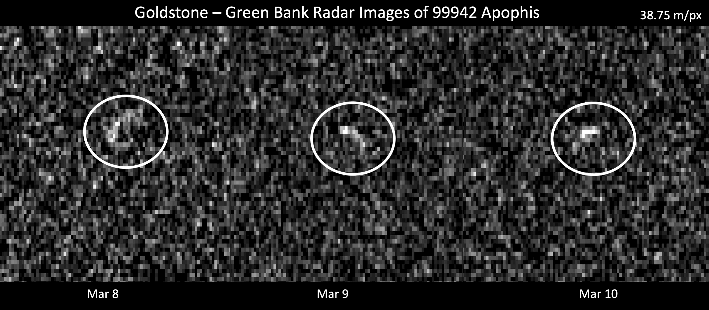

An Earth-crossing asteroid (ECA) is an asteroid whose orbital path around the Sun intersects Earth's orbit. The term is defined geometrically: it does not imply imminent collision, since highly inclined orbits can cross Earth's orbital plane without approaching Earth closely. Earth-crossing asteroids are a subset of near-Earth asteroids (NEAs), which are themselves a subset of near-Earth objects (NEOs) — Solar System bodies with a perihelion distance less than 1.3 AU.

NASA/JPL-Caltech/Goldstone
{kind=link}
Classification: Apollo and Aten Groups
Earth-crossing asteroids fall into two dynamical groups. Apollo asteroids have a semi-major axis greater than 1.0 AU and a perihelion distance less than 1.017 AU; their orbits are larger than Earth's but their perihelion falls inside Earth's aphelion, so they cross Earth's path. Named after asteroid 1862 Apollo (discovered 1932 by Karl Reinmuth), Apollos are the largest group of NEOs — approximately 21,083 were known as of early 2025. Aten asteroids have a semi-major axis less than 1.0 AU and an aphelion greater than 0.983 AU; their orbits are smaller than Earth's, but their aphelion extends past Earth's perihelion. Named after asteroid 2062 Aten (discovered 1976 by Eleanor Helin), Atens are considerably fewer in number; their Earth-interior orbits make them harder to detect with ground-based surveys.
Two related groups are not Earth-crossers: Amor asteroids approach but do not cross Earth's orbit (perihelion between 1.017 and 1.3 AU), and Atira asteroids orbit entirely within Earth's orbit.
Relation to Potentially Hazardous Asteroids
All Earth-crossing asteroids are NEOs, but not all NEOs are Earth-crossers. The more operationally significant category for planetary defence is potentially hazardous asteroids (PHAs), defined by two criteria: an Earth Minimum Orbit Intersection Distance (MOID) of 0.05 AU or less, and an absolute magnitude H ≤ 22.0 (roughly corresponding to a diameter of 140 m or greater). As of late 2024, 2,465 known NEOs meet both criteria. The PHA designation replaced the earlier ECA designation in operational hazard assessment because MOID provides a more physically meaningful measure of close-approach risk than the geometric criterion of orbital intersection alone.
Discovery and Surveys
As of December 2024, 37,378 NEOs had been discovered. Discovery has accelerated dramatically since the 1990s with dedicated survey programmes. Over 90% of NEOs larger than 1 km have now been found, fulfilling a Congressional mandate assigned to NASA in 1998; current efforts focus on completing the catalogue of objects larger than 140 m. Key contributing surveys include the Catalina Sky Survey, Pan-STARRS, and ATLAS (Asteroid Terrestrial-impact Last Alert System), which is optimised for the short-warning detection of smaller impactors. ATLAS discovered asteroid 2024 YR4 on 27 December 2024, which briefly reached Torino Scale level 3 before refined observations removed any impact threat. The collective umbrella of NEO discovery programmes is often referred to as Spaceguard.
Notable Examples
99942 Apophis (Aten class, ~340 m across) was discovered in June 2004. Initial calculations in December 2004 yielded a 2.7% impact probability for 13 April 2029 — the highest ever computed for a sizeable asteroid — briefly earning it a Torino scale rating of 4. Subsequent radar observations ruled out any impact for at least 100 years. On 13 April 2029 Apophis will nonetheless pass just ~32,000 km from Earth's surface, closer than the ring of geostationary satellites and visible to the naked eye from Europe, Africa, and western Asia. NASA's OSIRIS-APEX spacecraft is being redirected to rendezvous with Apophis during this flyby.
101955 Bennu (Apollo class, ~490 m mean diameter) was discovered on 11 September 1999 by the LINEAR Project. Bennu is a B-type carbonaceous asteroid that completes one orbit every 436.6 days and approaches Earth every ~6 years. Its cumulative impact probability through 2300 is approximately 1 in 1,750 (0.057%), with the highest single risk on 24 September 2182 (~1 in 2,700). NASA's OSIRIS-REx spacecraft collected 121.6 g of surface material from Bennu in October 2020, returning the sample to Earth in September 2023; analysis reveals organics, sugars, and hydrated minerals — primordial Solar System material approximately 4.6 billion years old.
1566 Icarus (Apollo class) was discovered by Walter Baade at Palomar Observatory on 27 June 1949. It was the first asteroid observed by radar (1968); its perihelion lies closer to the Sun than Mercury, and it crosses the orbits of Mercury, Venus, Earth, and Mars. 69230 Hermes (Apollo class) was discovered by Karl Reinmuth in October 1937, then lost for 66 years before Brian Skiff rediscovered it in October 2003; it proved to be a binary asteroid system.
Origin and Dynamical Delivery
Earth-crossing asteroids do not remain on their current orbits indefinitely; dynamical lifetimes are typically tens of millions of years. They are continuously replenished from two primary source regions. The dominant source is the main asteroid belt, where gravitational perturbations by Jupiter drive fragments into mean-motion resonances (such as the 3:1 and 5:2 resonances, corresponding to the Kirkwood gaps), causing chaotic orbital evolution that eventually produces planet-crossing orbits. The ν6 secular resonance at the inner edge of the belt (~2.1 AU) is a major injection mechanism. The Yarkovsky effect — a subtle thermal radiation recoil — gradually drifts small bodies into these resonances over millions of years. A secondary source is extinct or dormant comet nuclei that have exhausted their volatiles; several near-Earth asteroids on high-eccentricity orbits are suspected to be of cometary origin. Kilometre-scale Earth-crossing asteroids are estimated to collide with Earth a few times every million years, an event that would release energy equivalent to many nuclear warheads and cause global climate disruption.